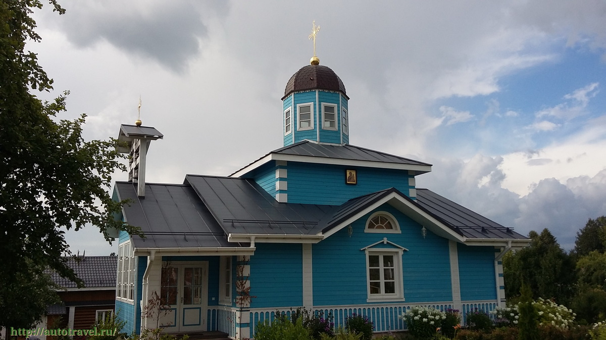
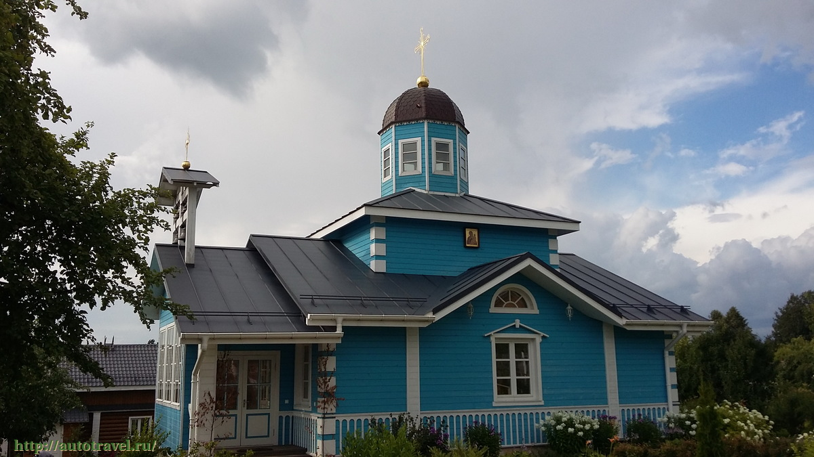

Пушкинские горы
Расположен в 112 км к юго-востоку от Пскова, в 57 км к юго-востоку от железнодорожной станции Остров.
Вернуться
Расположен в 112 км к юго-востоку от Пскова, в 57 км к юго-востоку от железнодорожной станции Остров.
 
